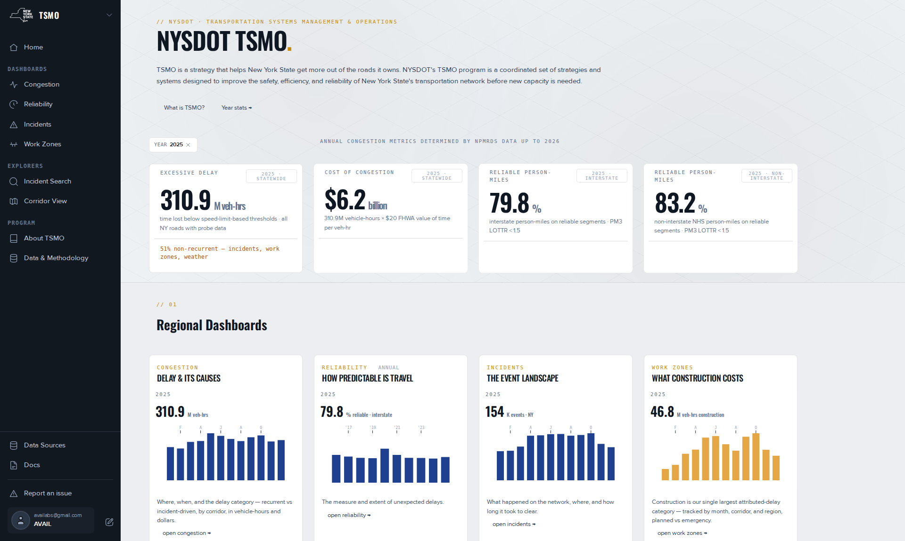

A year, three numbers, a dashboard.
About 10 minutes. You open TSMO, choose a year, read the headline numbers and what each counts, narrow the Congestion dashboard to one region, find its worst corridors, and open one in Corridor View. No account is needed. At the 2026-09-08 check, signed-out visitors to the TSMO dashboards were sent to the sign-in page, whose own text says public dashboards need no account; that redirect is logged as an issue, and this page describes the intended access.
What you will do
Read three statewide numbers for one calendar year, then narrow one of them to a region and down to a single corridor. On the way you learn the basis of each number, which is what you need before you quote it.
Before you start
Start at the landing page or on any product page. TSMO reads without sign-in. Have a NYSDOT region in mind, for example Region 8. If you do not know the regions, Geography lists the 11.
Steps
- Open TSMO. Select TSMO in the landing page's side navigation.The TSMO home opens. Its side navigation lists Dashboards, Explorers and Program.
- Choose a year. The year control sits in the hero as one Year chip that opens a list of years. Select 2025, the latest complete year.Every card on the page changes to that year. The chips offer every year the delay series holds, and some of those years are partial.
- Read the first headline card, annual excessive delay. It counts vehicle-hours of travel slower than the excessive-delay threshold, summed over the year. Basis: CY 2025, statewide, all vehicles, the monitored network with a posted speed and a traffic count. At the June 2026 data revision it read 310.86 million vehicle-hours, 51 % of it non-recurrent. See Excessive delay.
- Read the cost card. It is the same delay converted to dollars. The home multiplies vehicle-hours by a flat $20 per vehicle-hour, which gave $6.2 billion at the June 2026 revision. Other pages use a class-weighted rate, so check the basis before you compare dollar figures. See Which pages show which basis.
- Read the reliability cards: the share of person-miles travelled on reliable segments, one card for the Interstate and one for the non-Interstate National Highway System. It is the federal MAP-21 measure, and it is annual. For CY 2025 the home cites the FHWA resubmission: 80.0 % Interstate, target 75 %; 83.3 % non-Interstate, target 70 %. See LOTTR and the CY 2025 figures.You have three statewide numbers, each with a year, a unit and a basis.
- Open the Congestion dashboard. Under Regional Dashboards select the congestion card, Delay & its causes, or use Dashboards › Congestion.The dashboard opens with Year set and Region blank. Blank means statewide.
- Set a region. Select the value box of Region and pick one, for example Region 8.The list closes, a ✕ appears beside the region, the headline card titles name the region, and every panel recomputes. ✕ returns you to statewide.
- Scroll to Worst corridors by excessive delay. It ranks corridors by road name in millions of vehicle-hours for your year and region.The first row is the corridor in that region that lost the most time in that year.
- Open one corridor. In the table's Corridor page column select view →.Corridor View opens. The link opens Corridor View on its default corridor; pick the county and corridor there. If it shows a different corridor, pick the county, corridor and direction from its filter bar.
- Read the grid. Rows are the corridor's segments in road order. Columns are 5-minute slices from 05:00 to midnight. Cells are average speed. Pick a date in the filter bar or a day in the month strip above the grid.You are looking at one road on one day.

What you now have
Three statewide figures with their basis. One region's excessive delay and its worst corridors. One corridor's speeds through one day. And the two rules that trip most readers: a blank Region means statewide, and statewide is not the sum of the regions.
Where to go next
- Using the filter bar · every control and what blank means.
- Congestion dashboard · every panel, with its method.
- Reliability dashboard · the federal measures and why they are annual.
- Explore a corridor over time · the picker, the grid, the overlays.
- Partial years show partial totals · before you quote 2026.
References
- TSMO home design header, June 2026 revision: CY 2025 310.86 M vehicle-hours · 51 % non-recurrent · $6.2 B at $20 per vehicle-hour · 80.0 % / 83.3 % from the FHWA HPMS Travel Time Metrics resubmission.
- TSMO home, published 2026-08-24: band titles, card copy, the year chip.
- TSMO Congestion dashboard, published 2026-07-31: the worst-corridors table and its Corridor page column (feedback records 2194849, 2191408, 2194890).